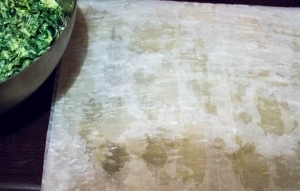
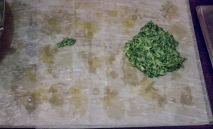
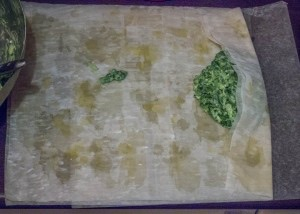
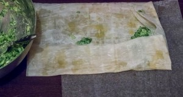
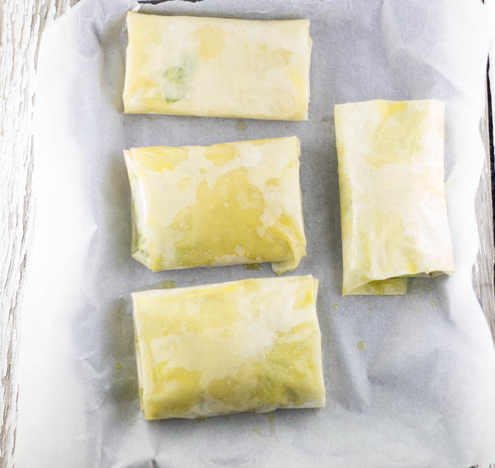
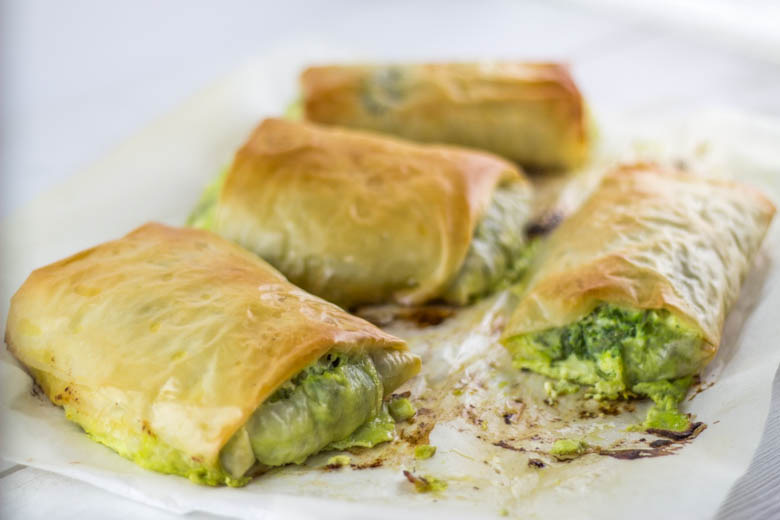
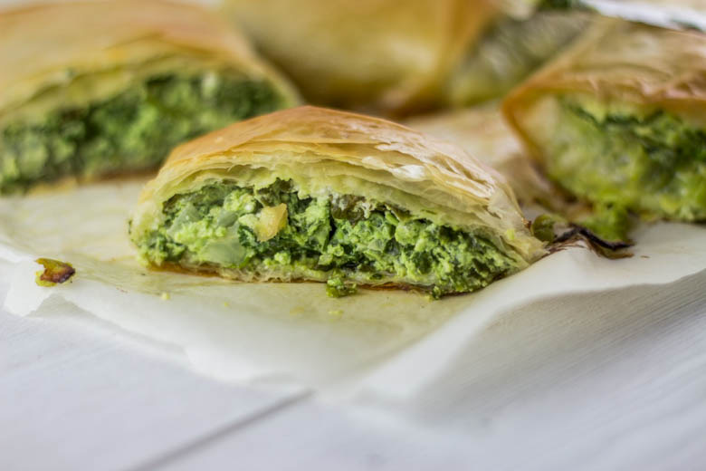

L’authentique Spanakopita

Ici vous trouverez une recette tout droit venue de Grèce : la Spanakopita!
Pour ceux qui ne le savent pas cet été nous sommes partis en Grèce et plus précisément sur l’île de Rhodes (notre périple pour ceux que cela intéresse est juste ici)! Entre balades et baignades nous avons aussi très bien mangé et entre autres de délicieuses spanakopitas!
Pour cette recette, rien de bien compliqué, des épinards, des œufs, un oignon, de la feta, le tout enroulé dans de la pâte filo et le tour est joué 🙂 ! En Grèce ils n’ajoutent pas grand chose de plus mais en France beaucoup ajoutent d’autres ingrédients alors que ce n’est vraiment pas nécessaire^^. Il existe une variante dans laquelle la garniture est enroulée non pas dans de la pâte filo mais dans une pâte type calzone mais je n’en ai quasiment pas vu!
Je vous propose donc de découvrir la recette authentique des spanakopitas. J’ai choisi la version « individuelle » que je trouve plus facile à manger mais vous pouvez la préparer à la manière d’une tourte, un peu comme le muttabaq (ici)!
J’espère que la recette vous plaira!
Ingrédients
- Feuilles de pâte filo - 12
- Epinard - 300g
- Oeuf - 4
- Oignon - 1
- Ricotta - 150g
- Feta - 200g
- Beurre - 85g
- Ail - 1 gousse
Instructions
- Dans un grand faitout nettoyer les épinards
- Bien les sécher
- Mettre les épinards dans le bol de votre mixeur et hacher les grossièrement en donnant de petites impulsions de mixeur (je l'ai fait en 4 fois car mon mixeur est tout petit)
- Ciseler l'oignon en petits morceaux et passer l'ail dans le presse ail
- Ajouter l'oignon et l'ail aux épinards hachés
- Bien mélanger
- Passer la feta au mixeur avec une partie des épinards (attention à ne pas "mixer"et à donner seulement deux trois impulsions de mixeur histoire que cela se mélange bien)
- Mélanger la feta au reste des épinards et ajouter la ricotta
- Battre les œufs et les ajouter au mélange
- Remuer pour obtenir quelque chose d'homogène.
- Préchauffer le four à 170°
- Faire fondre le beurre (clarifié pour moi)
- Sur votre plan de travail déposer une première feuille de pâte filo et "arroser" la de beurre à l'aide d'un pinceau ou d'une petite cuillère
- Poser par dessus une deuxième feuille de pâte filo arroser la également de beurre
- Terminer avec une troisième feuille de pâte filo que vous arroserez également d'un peu de beurre
- Déposer la farce dessus et procéder au pliage de la spanakopita (photos ci dessous)
- Enfourner à 170° pendant 30 min jusqu'à ce que le dessus soit joliment doré!







Les tips de la communauté
Excellente réception pour cette spécialité grecque découverte par beaucoup. Les lecteurs apprécient la simplicité du pliage et la croustillance finale. Quelques adaptations avec des ingrédients locaux mentionnées.
Astuces
- L'ajout d'une touche de menthe fraîche améliore les saveurs grecques
- Les épinards peuvent être surgelés pour faciliter la préparation
- Il est important de respecter précisément la quantité d'ail (1 gousse)
Variantes suggérées
- Utiliser des feuilles de brick à la place de pâte filo pour une version alternative
- Adapter en samosas avec une seule feuille de brick pour une présentation différente
- Ajouter de la menthe pour la touche personnelle
Ajustements signalés
- La quantité d'ail manquait dans la recette - correction apportée (1 gousse)
- Les feuilles de brick ne donnent pas exactement le même feuilletage que la pâte filo